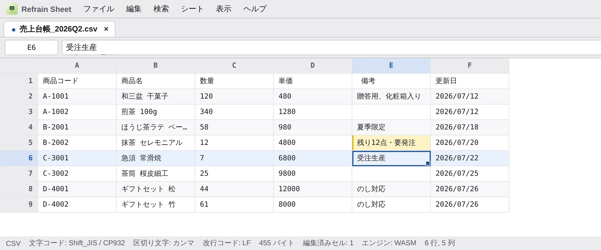
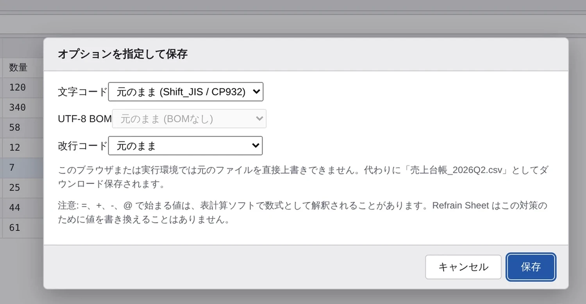
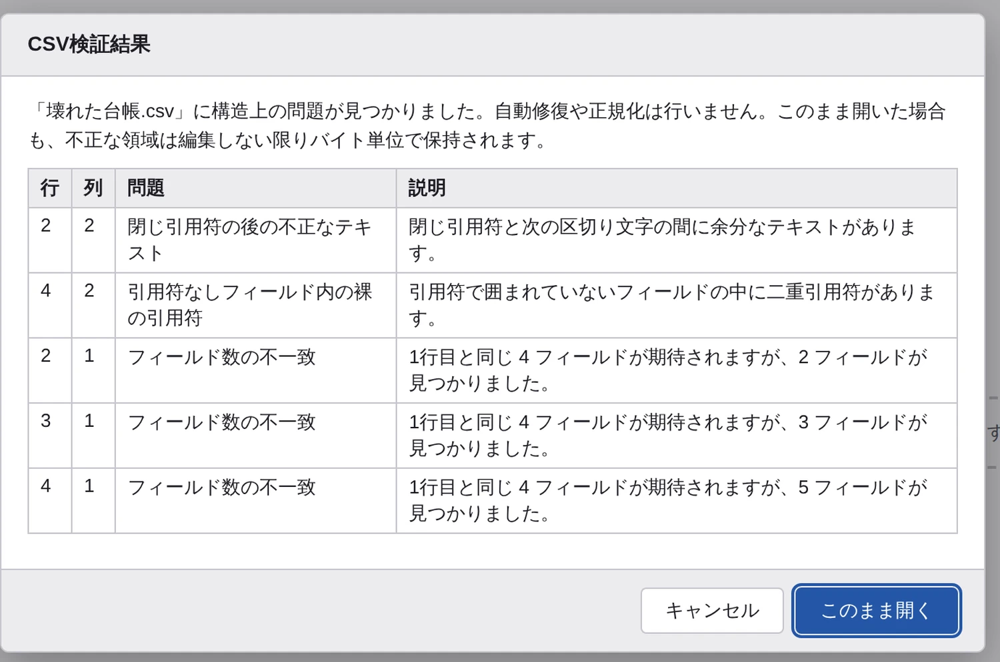
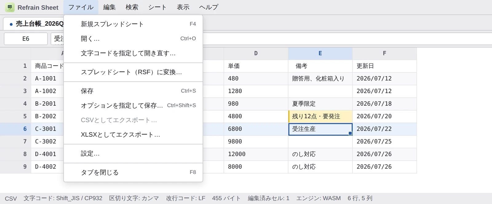
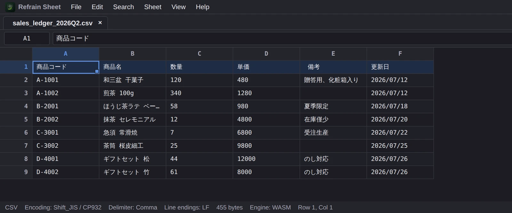

LOCAL-FIRST CSV EDITOR
CSVを、勝手に書き換えない。
Shift_JIS対応・ブラウザ完結の書式保持CSVエディタ
Refrain Sheet は、ブラウザだけで動く書式保持CSV・スプレッドシートエディタです。編集するのはセルの値だけ。区切り文字、引用符、前後の空白、改行コード、文字コード、BOM、デコードできないバイト、そして壊れたCSVの領域まで、そのまま残します。
無編集で保存すれば、出力は元ファイルとバイト単位で完全一致。

THE PROBLEM
「開いて保存しただけ」で壊れるCSV。
一般的な表計算ソフトでCSVを開くと、文字コードが変わり、引用符が付き外れし、改行コードが統一され、先頭ゼロや日付が別物になります。差分は本来1セルのはずが、ファイル全体に広がる。Refrain Sheet はその逆をやります。
通常保存で「絶対にやらないこと」
- 改行コードや区切り文字を統一する
- ヘッダーのレイアウトを変える
- 空白を足す・削る
- 不要な引用符を足す・外す
- BOMを足す・外す
- 壊れたCSVを勝手に修復する
- 未編集フィールドのデコード不能バイトを置き換える
編集は、そのフィールドのバイト範囲だけ
1セルを書き換えても、再シリアライズされるのはその1フィールドだけ。ほかのバイトは一切動きません。引用されていたフィールドは引用されたまま、必要になったときだけ引用符が付きます。
FEATURES
日本の現場のCSVに、ちゃんと向き合う。
文字コードの自動判定から、壊れたCSVの診断、IME入力の安全性まで。実務でCSVを触る人が困るところを、ひとつずつ潰しています。
文字コードと保存オプション
UTF-8（BOM有無）、Shift_JIS / CP932、EUC-JP に対応。自動判定に加えて「文字コードを指定して開き直す」もでき、開き直しても元バイトは変化しません。保存時は文字コード・BOM・改行コードを個別に選べます。
- CP932で表現できない文字は既定で保存を中止し、影響セルを報告
- 改行コードの変換は行終端だけを書き換え、末尾の改行を勝手に足さない
- ステータスバーに文字コード・区切り文字・改行コード・サイズを常時表示

壊れたCSVも、直さずに開く
閉じられていない引用符、引用符の後の余分なテキスト、フィールド数の不一致——問題は行・列つきの一覧で提示されます。自動修復も正規化も行いません。「このまま開く」を選べば、不正な領域は編集しない限りバイト単位で保持されます。

メニュー優先のUIと、日本語入力の安全性
デスクトップアプリのようなメニューバーがコマンドの唯一の一覧。すべての操作はキーボードからも届きます。日本語入力は最初の一打鍵から安全で、ローマ字の1文字目が英字として漏れることはありません。
- 変換中は Enter / Esc / 矢印キーがIMEのもの。確定してから初めてセルに届く
- Ctrl+W・Ctrl+F・Ctrl+T などブラウザ標準のキーは奪わない
- Alt+Enter でセル内改行、複数行の値もCSV・RSF・コピペを往復

RSF SPREADSHEET
スプレッドシートが必要なときは RSF
数式・行列の挿入・メタデータはプレーンCSVでは表現できません。だから別形式（.rsf）に明示的に変換したときだけ有効になります。元の .csv は指一本触れません。
FORMULAS
55関数：SUM・XLOOKUP・SUMIFS・TEXT・FILTER・UNIQUE ほか
WORKBOOKS
複数ワークシート、シート間参照、絶対／相対参照、循環参照の検出
DATA TOOLS
フィルタ、オートフィット、選択範囲の統計、CSV / XLSX エクスポート
NO EVAL
数式エンジンは自作パーサ。eval も new Function も使いません
DETAILS
英語UIとダークテーマも、標準装備。
日本語と英語はどちらも第一級のUI言語です。テーマはシステム設定に追従し、ライト／ダークを明示指定することもできます。表示の変更がCSVのバイトやRSFのデータを書き換えることは決してありません。

COMPARISON
一般的な表計算ソフトとの違い。
Refrain Sheet は Excel の置き換えではありません。「CSVというファイルそのものを壊さずに直す」ための道具です。
| Excel / 一般的な表計算ソフト | オンラインCSVエディタ | Refrain Sheet | |
|---|---|---|---|
| 無編集で開いて保存 | 文字コード・引用符・改行が書き換わることがある | 多くは再シリアライズされる | バイト単位で完全一致 |
| 1セルだけの編集 | ファイル全体が再出力される | ファイル全体が再出力される | そのフィールドのバイト範囲だけ |
| Shift_JIS / CP932 | 環境依存。文字化けや自動変換が起きやすい | 非対応のものが多い | 自動判定＋開き直し＋保存時に選択可 |
| 壊れたCSV | 黙って修復・正規化される | 読み込みエラーになりやすい | 診断を提示し、保持したまま開く |
| 先頭ゼロ・日付・長い数値 | 型推論で勝手に変換されることがある | 実装により異なる | 値は文字列として保持。推論による書き換えなし |
| データの送信先 | ローカル（クラウド版はサーバー） | サーバーへアップロード | どこにも送信しない（通信ゼロ） |
| 導入 | ライセンス・インストールが必要 | アカウント登録が必要な場合も | HTMLファイル1つ。file:// でも動く |
※ 比較は一般的な利用シーンでの傾向をまとめたものです。Refrain Sheet の挙動はリポジトリのREADMEおよびテストで定義されています。
SECURITY
外に出ていかない、という設計。
機密を含むCSVを扱う前提で作られています。実行時のネットワーク接続は一切ありません。
通信ゼロ
CSPで default-src 'none' / connect-src 'none' を指定。CDN・外部フォント・API・アナリティクス・テレメトリのいずれもありません。
コードを実行しない
セル内容はHTMLとして解釈されず、innerHTML・eval・new Function・マクロは一切使用しません。数式は専用エンジンで評価されます。
サプライチェーン対策
本番依存は1パッケージのみ、lockfile固定、install スクリプト無効化。リリースにはSHA-256・SBOM・ビルド来歴の署名が付きます。
GET STARTED
3ステップで使いはじめる。
ブラウザで開く
公開中のWebアプリをそのまま開くだけ。インストールもアカウント登録も不要です。
CSVをドラッグ＆ドロップ
ウィンドウのどこにドロップしてもOK。ファイルごとにタブが開きます。
オフラインで使う
リリースZIPを展開し、index.html をダブルクリック。file:// でも完全に動作します。
よくある質問
アップロードしたデータはどこに送られますか？
どこにも送られません。ファイルはブラウザ内で読み込まれ、保存もお使いの端末に対して行われます。実行時のネットワーク接続はCSPレベルで禁止されています。
Excelの代わりになりますか？
目的が違います。Refrain Sheet はCSVを壊さずに直すためのエディタで、数式や行列の挿入が必要なときは明示的に .rsf スプレッドシートへ変換します。Excel互換を保証するものではありません。
大きなファイルも開けますか？
既定の上限は512MiB（設定で16MiB〜2GiBに変更可）で、上限を超えるファイルは読み込む前に拒否されます。表示は仮想化されていますが、数百MB級のファイルは描画・編集が重くなることがあります。
対応していない文字コードはありますか？
現行リリースでは UTF-16 と ISO-2022-JP に対応していません。該当しそうなファイルは警告が出たうえで、ベストエフォートで開かれます（バイトは変更されません）。
オーバーライト保存は必ずできますか？
Chromium系ブラウザでは File System Access API により元ファイルへ直接上書きできます。Firefox・Safari などではダウンロード保存にフォールバックし、その旨が通知されます。